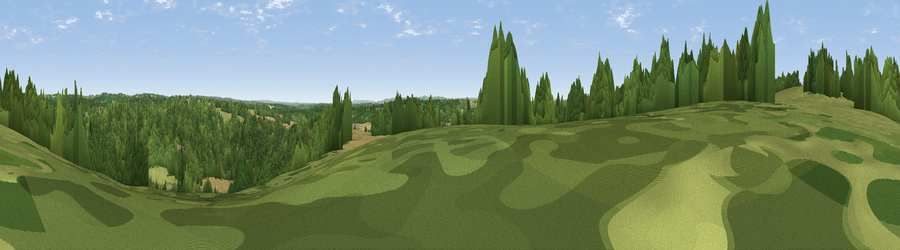

Viewpoint near Balcombe
#39988 in England · top 65% of its area beats it · near BalcombeWhere it is
The exact computed spot (TQ 30175 29325). Click the marker for map links.
The view, rendered

A 360° render of this exact spot computed from the terrain model, tree cover and land cover — summer colours, afternoon light, calibrated against photographs of famous viewpoints. Real trees, hedges and buildings will differ in detail.
The panorama
Grey silhouette: terrain skyline in each direction (720 bearings, Earth curvature and refraction included). Dashed green: skyline with trees (+15 m) and buildings (+8 m) as obstacles. Blue strip: how far the ground is visible on each bearing.
Where the view opens
Wedge length = distance to the farthest visible ground on that bearing (vegetation-aware). Rings at 10, 25 and 50 km.
What fills the view
56% woodland · 30% grassland · 13% cropland · 1% built-up
Angular shares of the visible panorama (visual magnitude), not map area. Landscape diversity 0.44 (0–1 Shannon).
Key numbers
More beautiful places nearby
The staircase of upgrades: each row has a higher view potential than everything closer. Driving times are estimates from straight-line distance, calibrated against real road routing — check an actual route before setting out.
| Place | Direction | Drive | Score |
|---|---|---|---|
| Viewpoint near Balcombe | NNW · 1 km | ~2 min | 40.1 |
| Viewpoint near Sharpthorne | ENE · 7 km | ~14 min | 41.0 |
| Viewpoint near Turners Hill | NE · 8 km | ~16 min | 47.7 |
| Viewpoint near Kingsfold | WNW · 14 km | ~25 min | 55.0 |
| Wolstonbury Hill | S · 16 km | ~28 min | 79.6 |
| Viewpoint near Westmeston | S · 16 km | ~29 min | 81.1 |
| Ditchling Beacon | S · 17 km | ~29 min | 81.8 |
| Fulking Hill | SSW · 19 km | ~33 min | 82.2 |
51.04853, -0.14428 · source: screening · position refined by local search. Computed location — check access rights before visiting.